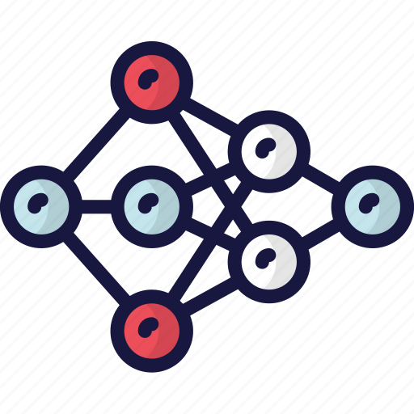

PylaAI Colatz Calculator is a simple calculator that can calculate the needed amount of cycles to reach the number 1 with any given number using the colatz formula 3x+1

PYLA APP

PylaAI Colatz Calculator is a simple calculator that can calculate the needed amount of cycles to reach the number 1 with any given number using the colatz formula 3x+1